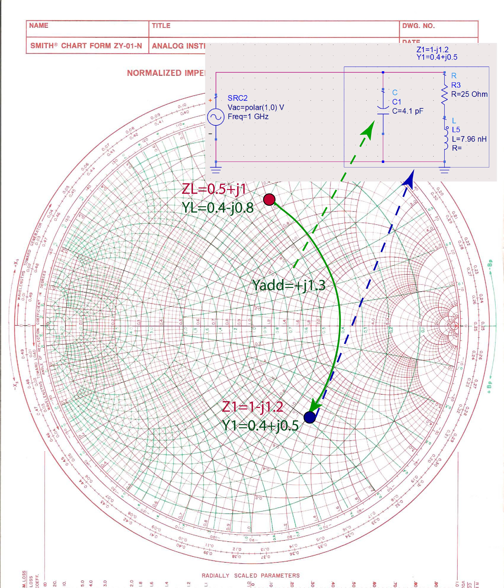

In lumped-element impedance matching, we use only capacitors and inductors. Fully lumped-impedance matching circuits are used at lower frequencies, where transmission lines are too long to be practical for matching. Note that when we are matching the load with lumped elements, there are no SWR circles on the Smith Chart because we are not using transmission lines.
Graphically, there are several different lumped-element impedance matching circuits that we can make for a specific impedance. For example, for impedance , there are four different 2-element circuits that we can make, as shown in Figure fig:LumpedVariety. In the next paragraph, we will use the orange path on the Smith Chart, with intermediate impedance .
We start from the load impedance , and we normalize it to the to get . The equivalent admittance of this impedance is . We identify the position of this impedance on the Smith Chart. Figure fig:LumpedImpM1 shows the green admittance line we follow to impedance . The equivalent admittance of this impedance is . The green admittance line shows that we have to add to the load admittance to get the total admittance of . . Since we are adding two admittances, the elements have to be in parallel. Because the added admittance is positive, the added element is a capacitor, as shown in Figure fig:LumpedImpM1. To find the capacitance of the capacitance we need to add in parallel, we first have to re-normalize the additional admittance by multiplying it with the Si. The admittance of a capacitor is has to be equal to this added admittance. . From this equation, we find that the capacitance is pF.

When we add pF capacitor in parallel with the load , the total impedance of the two elements in parallel is .The real part of this impedance is already . The final step is to remove the reactive part of the impedance by adding an additional impedance of , as shown in Figure fig:LumpedImpM3. The total impedance is then . Since we are adding two impedances, the elements must be in series. Because the added impedance is positive, it must be an inductor. To find the inductance of the inductor, . From this equation, we get that the inductance is nH.